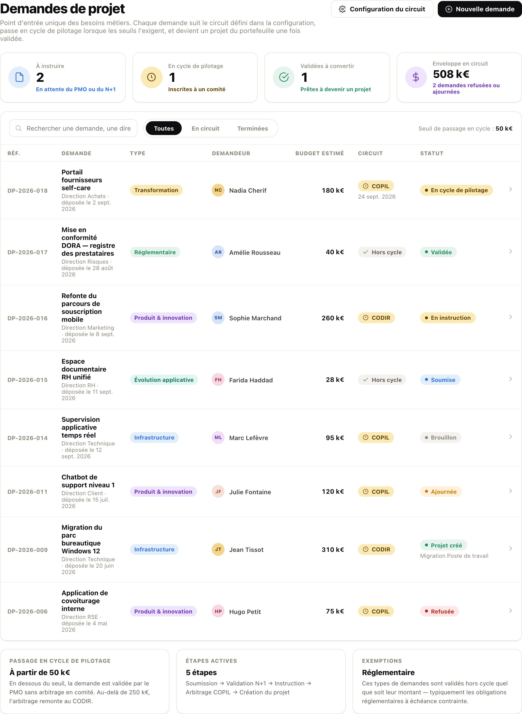
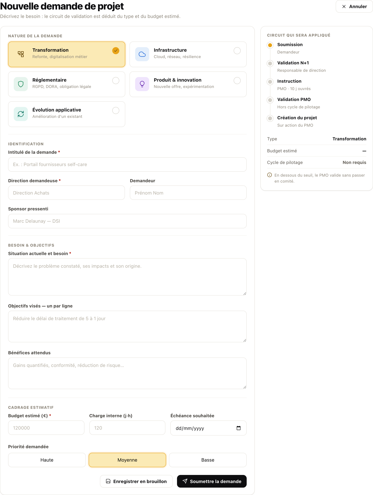
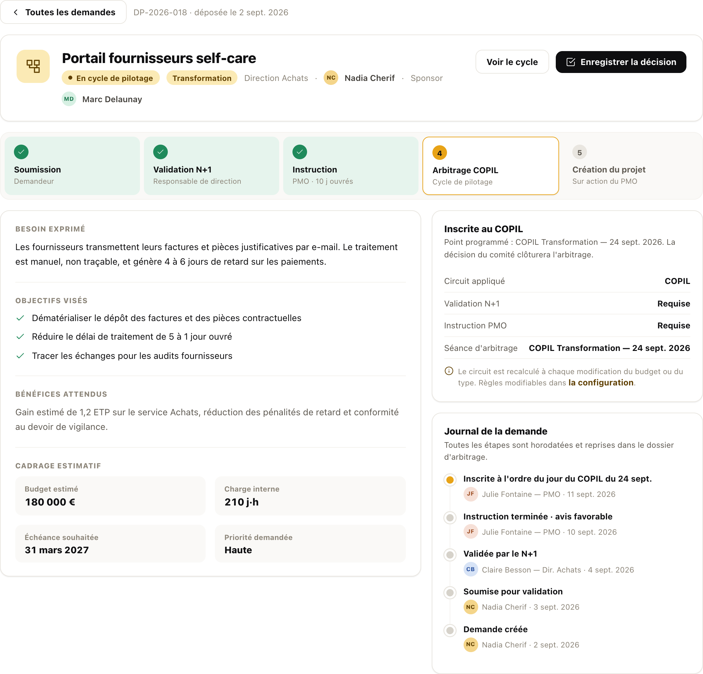
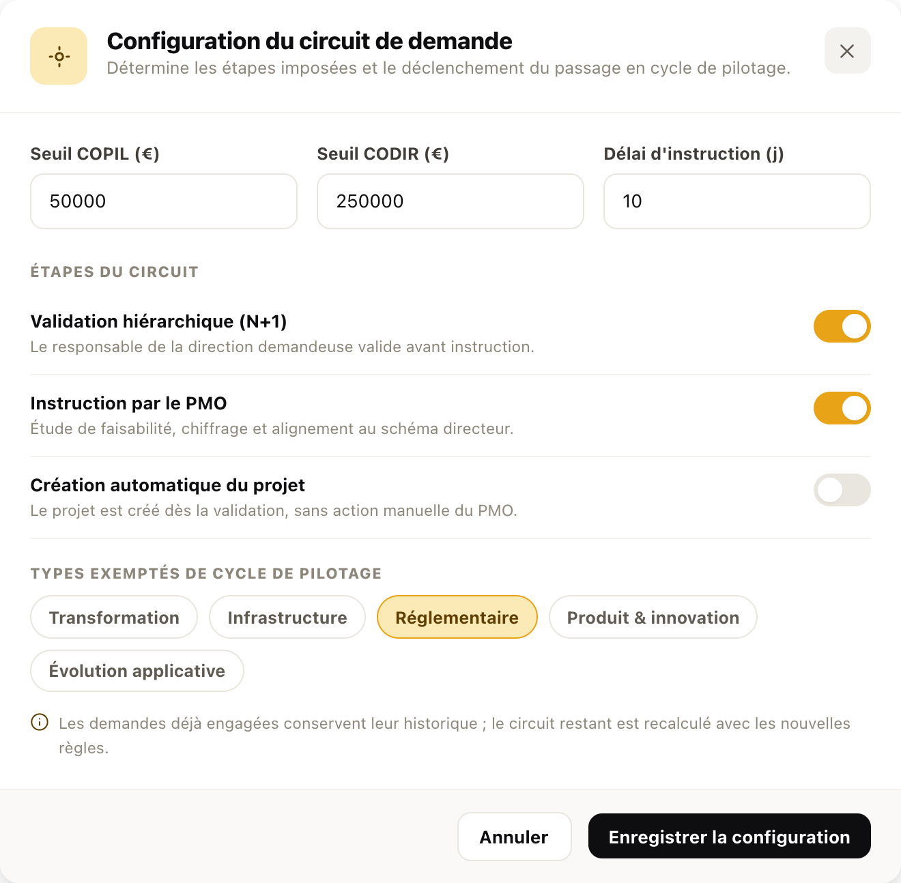
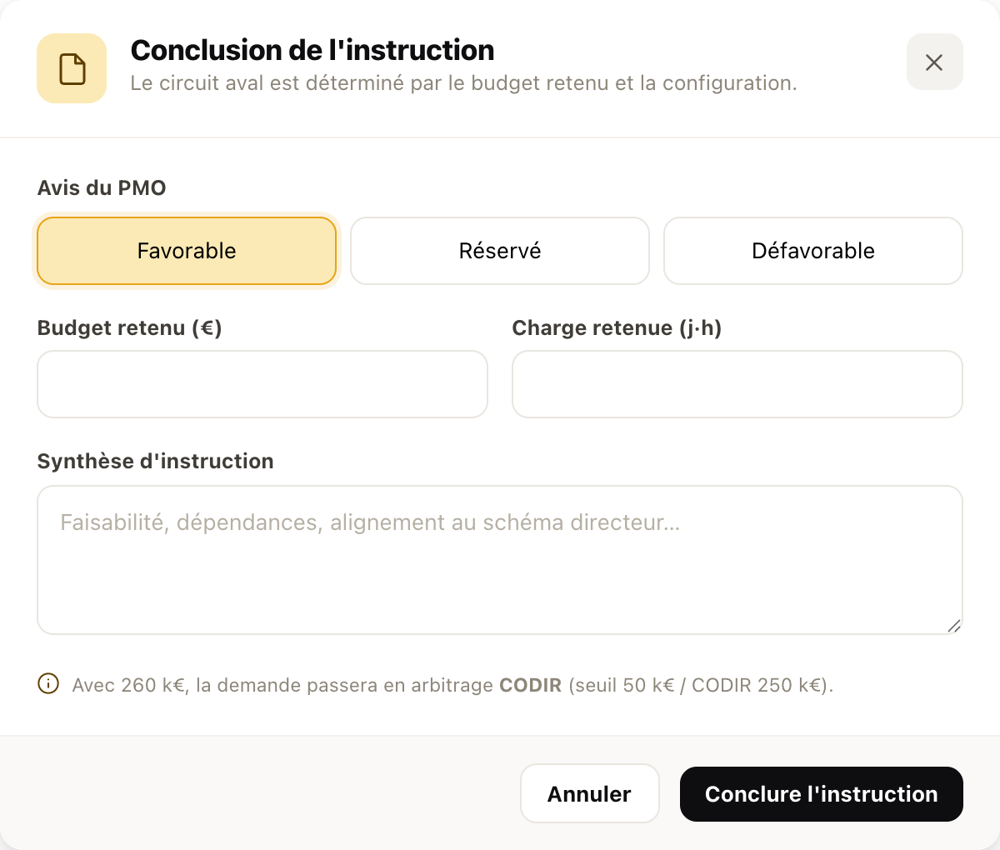
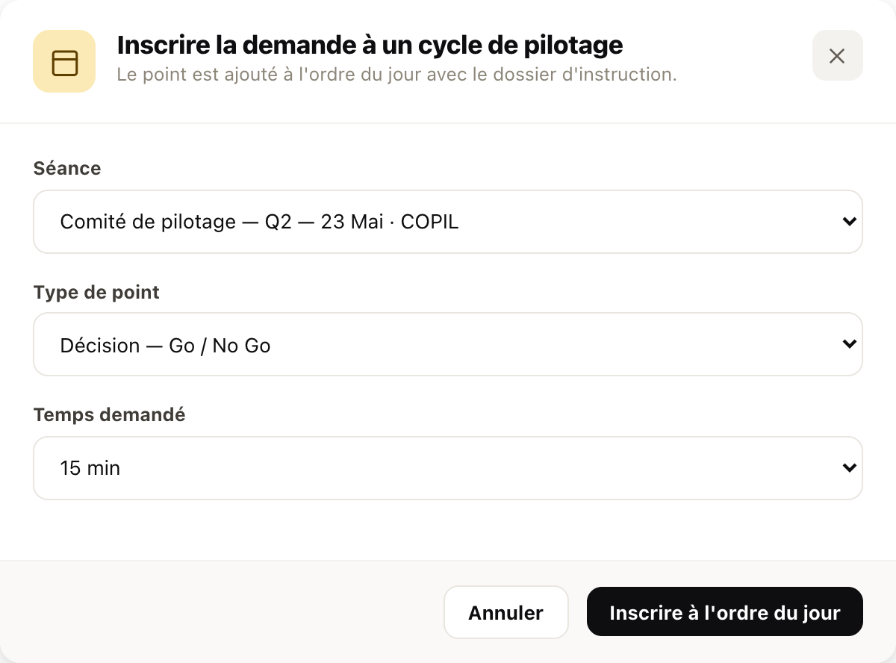
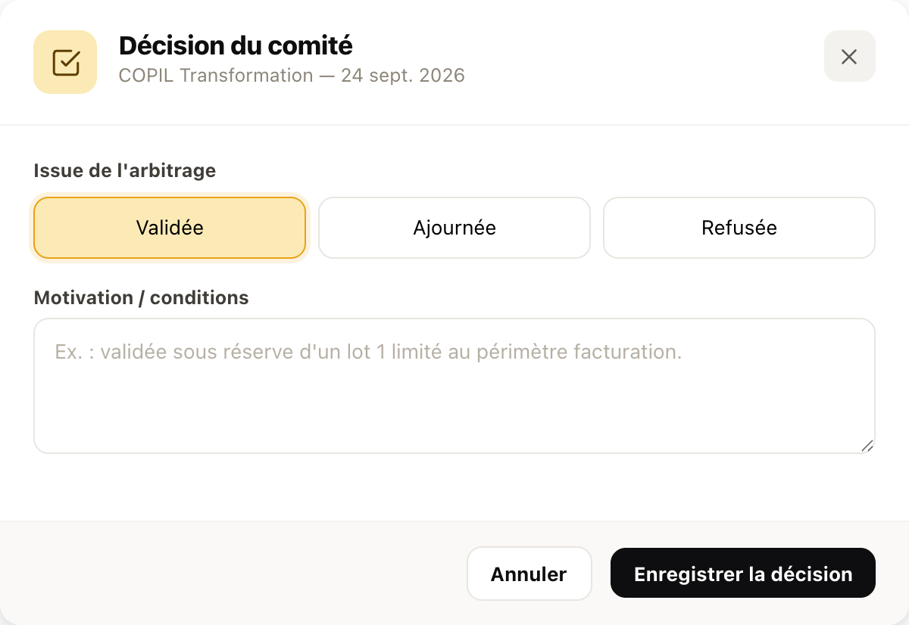

Spécification du module amont du portefeuille : la saisie d'un besoin métier, son circuit de validation configurable, son passage — ou non — en cycle de pilotage, et sa transformation en projet. Pour chaque écran : la capture réelle de l'application annotée zone par zone, les règles de routage, les interactions, les messages et les critères de recette.
Aujourd'hui les besoins arrivent par e-mail, en réunion ou par le couloir : le PMO ne dispose d'aucune liste exhaustive, les directions ne savent pas où en est leur demande, et les comités découvrent les sujets en séance. Le module donne un formulaire unique, un circuit dont les règles sont écrites une fois pour toutes, et un journal qui restitue qui a décidé quoi et quand. Une demande validée n'est pas recopiée : elle devient le projet, avec son cadrage, son budget et son sponsor.
Principe directeur : aucune demande ne disparaît. Un refus, un ajournement ou une réouverture restent visibles dans la liste et dans le journal — c'est ce qui permet de répondre, six mois plus tard, à « qu'est devenue ma demande ? ».
Le PMO configure les étapes et les seuils. Chaque demande calcule son propre chemin : le demandeur voit ce chemin avant de soumettre, le comité ne reçoit que ce qui le concerne.
La demande doit être inscrite à l'ordre du jour d'une séance existante (le module Cycles de pilotage et le module Réunions fournissent la liste). La décision du comité — validée, ajournée, refusée — clôt l'étape 4. Au-delà du seuil CODIR, l'arbitrage remonte au CODIR sans intervention du PMO.
Le PMO conclut l'instruction par un avis ; un avis favorable vaut validation. Aucun point n'est créé en comité. Les types exemptés — par défaut « Réglementaire » — suivent cette branche quel que soit leur montant, pour ne pas retarder une obligation à échéance contrainte.
| Statut | Qui agit | Ce qui est possible | Transition suivante |
|---|---|---|---|
| Brouillon | Demandeur | Compléter, modifier, supprimer — invisible des comités | Soumettre → Soumise ou Instruction |
| Soumise | Responsable de direction | Valider, refuser ; le demandeur n'édite plus | Valider → Instruction ou Cycle |
| En instruction | PMO | Retenir un budget et une charge, émettre un avis | Avis → Cycle, Validée ou Refusée |
| En cycle de pilotage | PMO puis comité | Inscrire à une séance, puis enregistrer la décision | Décision → Validée, Ajournée, Refusée |
| Validée | PMO | Créer le projet (ou création automatique si configurée) | Créer → Projet créé |
| Projet créé | — | Lecture seule ; renvoie vers la fiche projet | État terminal |
| Ajournée | PMO | Rouvrir pour compléter le dossier | Rouvrir → Brouillon |
| Refusée | PMO | Rouvrir (exceptionnel, motivé au journal) | Rouvrir → Brouillon |
Le circuit est recalculé à chaque modification du type ou du budget, y compris pendant l'instruction : si le PMO retient 260 k€ là où le demandeur estimait 40 k€, la demande bascule d'elle-même en arbitrage CODIR. Les étapes déjà franchies restent au journal, jamais réécrites.

1 2 3 4 5 6 7 8Répondre en un regard à trois questions du PMO : qu'est-ce qui attend une action de ma part, qu'est-ce qui part en comité, et combien d'argent est engagé dans l'entonnoir.

1 2 3 4 5 6 7 8Faire décrire un besoin en langage métier — pas un projet. Le formulaire ne demande jamais au demandeur de choisir son circuit : il le lui montre.

1 2 3 4 5 6 7 8Le dossier d'arbitrage : ce que le comité lit, et l'unique endroit d'où l'on fait avancer la demande. L'action disponible dépend du statut — jamais plus de deux boutons.

1 2 3 4 5Le seul endroit où l'on décide de la gouvernance amont. Six réglages, aucune notion technique : ce que le PMO change ici se lit immédiatement dans la liste et dans les fiches.
Les demandes déjà engagées conservent leur journal ; seul le circuit restant est recalculé. Une demande dont l'arbitrage est déjà rendu n'est jamais renvoyée en comité.

1 2 3 4 5L'instruction est le moment où le chiffrage du demandeur devient un chiffrage tenable — et donc où le circuit aval peut changer. L'écran le dit avant de valider.
Avis favorable ou réservé → arbitrage requis (statut En cycle) ou validation directe (statut Validée) selon le seuil. Avis défavorable → statut Refusée, l'étape d'instruction est marquée en échec dans le stepper.

1 2 3
4 5Une demande validée n'est pas un document classé : elle écrit dans le portefeuille, dans les plans d'action et dans le budget. Sans double saisie, et en gardant la trace de son origine.
| Module | Sens | Contenu de l'échange |
|---|---|---|
| Cycles de pilotage | Lecture | Instances et séances à venir, avec leur type (COPIL, CODIR, COPROJ) pour ne proposer que les séances compétentes. |
| Cycles de pilotage | Écriture | Point ajouté à l'ordre du jour de la séance, avec type de point et temps demandé ; arbitrage rendu ajouté au relevé de la séance. |
| Réunions | Écriture | Point d'ordre du jour et décision associée, rattachés à la réunion planifiée choisie. |
| Portefeuille projets | Écriture | Création d'une ligne projet à l'état « Cadrage », progression 0 %, avec sous-ligne « Issu de la demande DP-… » et badge de référence. |
| Plans d'action | Écriture | Création du plan du projet et d'une première action : « Cadrer le projet et désigner le chef de projet ». |
| Budget | Écriture | Budget retenu à l'instruction transmis comme enveloppe à engager ; aucune ligne de dépense n'est créée. |
| Ressources | Lecture | Annuaire des collaborateurs : nom, direction, photo pour les badges ronds. |
Le projet créé conserve la référence de sa demande, et la demande conserve le lien vers son projet. Depuis la fiche projet, on doit pouvoir revenir au besoin initial et à la décision qui l'a autorisé — c'est ce chaînage qui rend l'audit possible.
Une demande est un objet plat, augmenté d'un journal en append seul. Le circuit n'est pas stocké : il est calculé à partir du type, du budget et de la configuration en vigueur — ce qui garantit qu'un changement de règle n'invente pas d'historique.
| Champ | Type | Description et contraintes |
|---|---|---|
id | Référence | Format DP-AAAA-NNN, attribué à la création, jamais réutilisé. |
t | Texte | Intitulé de la demande. Obligatoire, une ligne. |
type | Énuméré | transformation · infra · reglementaire · produit · evolution. Détermine l'exemption éventuelle. |
dir · who · sponsor | Texte | Direction demandeuse (obligatoire), demandeur, sponsor pressenti. Résolus contre l'annuaire pour l'affichage des badges. |
need · obj[] · benef | Texte / liste | Besoin, objectifs visés, bénéfices attendus. Constituent le dossier lu en comité. |
budget · charge | Nombre | Euros et jours·homme. Le budget est la variable de routage ; il est remplacé par le budget retenu à l'instruction. |
deadline · prio | Date · énuméré | Échéance souhaitée, priorité déclarative (haute, moyenne, basse). |
st | Énuméré | brouillon · soumise · instruction · cycle · validee · projet · ajournee · refusee. |
koAt | Énuméré | Étape à laquelle la demande a été refusée ou ajournée — sert à marquer l'échec dans le stepper. |
instance · seance · seanceRef | Texte | Instance d'arbitrage calculée, libellé de la séance et identifiant du point créé dans le module cible. |
proj | Référence | Projet créé depuis la demande. Renseigné uniquement au statut « Projet créé ». |
jrn[] | Journal | Triplets (libellé, auteur, date). Append seul : aucune entrée n'est modifiée ni supprimée, y compris après réouverture. |
Configuration du circuit (objet unique, portée organisation) : seuilCopil, seuilCodir, delai, n1, instr, autoProj, exempt[]. Toute modification est datée et attribuée, pour expliquer un routage passé.
Règle Le circuit aval est recalculé, l'amont est figé. Une demande validée par le N+1 à 40 k€ puis instruite à 300 k€ part en CODIR sans repasser par la direction.
Règle La demande reste au statut « En cycle de pilotage », sans séance. La liste affiche « À inscrire · COPIL » ; l'inscription est rouverte dès qu'une séance existe.
Règle Soumission et création du projet ne sont jamais désactivables : le circuit minimal est soumission → validation PMO → création.
Règle Retour au statut brouillon, séance détachée, journal conservé et complété par « Demande rouverte pour complément de dossier ».
À développer Signalement non bloquant à la soumission lorsqu'une demande active de la même direction porte un intitulé proche.
Demande « Portail fournisseurs self-care » soumise · validation N+1 attendue— après soumission.
Validation N+1 enregistrée · instruction affectée au PMO
Instruction conclue · arbitrage en CODIR requis
Point inscrit à l'ordre du jour · COPIL Transformation — 24 sept. 2026
Arbitrage favorable enregistré · demande prête à devenir un projet
Demande ajournée · dossier à compléter
Demande refusée en comité
Projet « Portail fournisseurs self-care » créé · fiche projet initialisée
Donnez un intitulé à la demande— blocage à la soumission.
Indiquez la direction demandeuse— blocage à la soumission.
Lecture Toute demande est visible de sa direction et du PMO ; les comités voient les demandes inscrites à leur ordre du jour.
Écriture Configuration, instruction, inscription, décision et création du projet : PMO uniquement. Validation N+1 : responsable de la direction demandeuse.
À vérifier un par un, dans l'ordre, sur un jeu de démonstration comportant au moins une demande par statut.
Jeu de démonstration de référence : 8 demandes couvrant les huit statuts, dont une réglementaire exemptée à 40 k€, une transformation à 180 k€ inscrite au COPIL, une produit à 260 k€ en instruction (bascule CODIR) et une infrastructure à 310 k€ déjà convertie en projet.